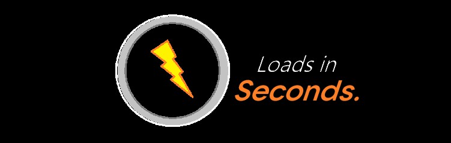
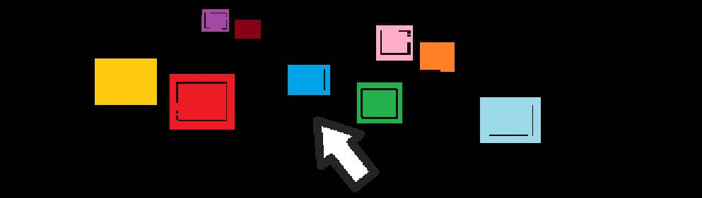
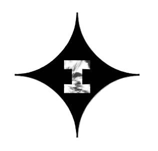

The best internet speed.
Tunneling system.

Best for games, sites and apps.



1. ОБЩИЕ ПОЛОЖЕНИЯ И ЮРИДИЧЕСКИЙ ТУМАН
1.1. Настоящий Документ регулирует отношения между Администрацией проекта Impact Network (Единственный разработчик, засыпающий за клавиатурой) и Пользователем (Человек, который не читает соглашения).
1.2. Используя наш сервис и туннели, вы автоматически соглашаетесь со всеми пунктами, даже если вы лениво проскроллили текст до самого низа за 0.3 секунды.
1.3. Если вы не согласны с условиями, вы обязаны немедленно закрыть вкладку, удалить браузер, выключить компьютер из розетки и уехать жить в глухой лес без интернета.
2. КАКИЕ ДАННЫЕ МЫ СОБИРАЕМ (И ЗАЧЕМ ОНИ НАМ НЕ НУЖНЫ)
2.1. Персональная информация: Мы принципиально не собираем ваши реальные имена, паспорта и клички домашних животных. Но система может зафиксировать уровень вашей депрессии по тому, насколько яростно вы кликаете по кнопке «СКАЧАТЬ».
2.2. Файлы Cookie: Наш сайт использует цифровые файлы Cookie. Они не содержат сахара, шоколадной крошки и глутамата натрия. Разработчик снимает с себя ответственность за то, что вы пошли пить чай, начитавшись этого пункта.
2.3. Технические метрики: Мы можем фиксировать модель вашего устройства, чтобы грустно вздохнуть, если ваш телефон мощнее, чем рабочий ноутбук создателя этого сайта.
3. ОБРАБОТКА ДАННЫХ И ТРЕТЬИ ЛИЦА
3.1. Мы обязуемся хранить вашу конфиденциальность так же надежно, как в шпионских фильмах. Ваши данные не будут проданы рекламодателям, потому что они отказались покупать базу, состоящую из трех ваших друзей.
3.2. Передача данных государственным органам возможна только в том случае, если они предоставят официальный бумажный запрос, подписанный лично Галактусом или Оптимусом Праймом, скрепленный сургучной печатью Министерства Магии.
3.3. В случае внезапного восстания машин или наступления классического зомби-апокалипсиса, шифрование Impact Network перейдет в режим автономной защиты, чтобы зомби не узнали, какие мемы вы смотрели перед концом света.
4. БЕЗОПАСНОСТЬ И ТЕХНОЛОГИИ ЗАЩИТЫ
4.1. Для защиты трафика мы используем передовые методы шифрования, квантовую запутанность и синюю изоленту.
4.2. Архитектура безопасности проекта тесно связана с графическим элементом нашего логотипа. Сила аниме-взрыва (Impact Frame) создает вокруг ваших пакетов данных непробиваемый барьер. Если хакеры попытаются взломать наш туннель, у них на мониторах просто начнет бесконечно крутиться эпичный опенинг из Наруто на максимальной громкости.
4.3. Администрация не несет ответственности за перебои в связи, вызванные магнитными бурями на Солнце, ретроградным Меркурием или тем, что ваш кот случайно лег на роутер и перекрыл сигнал своим телом.
5. ИЗМЕНЕНИЕ ПОЛИТИКИ
5.1. Администрация оставляет за собой право менять этот текст в любое время дня и ночи. Мы можем проснуться в 4 утра, решить, что нам скучно, и вписать сюда рецепт идеального борща. Обязанность проверять наличие рецепта целиком и полностью лежит на вас.
6. РЕЦЕПТ ИДЕАЛЬНОГО БОРЩА
6.1. Сварить бульон: Залейте мясо холодной водой (около 3 л) и поставьте на средний огонь. После закипания снимите пену, уменьшите огонь и варите 1,5–2 часа до мягкости мяса. За 30 минут до конца добавьте соль и лавровый лист. Достаньте мясо, нарежьте кусочками и верните в бульон. Подготовить свёклу: Натрите свёклу на крупной терке. Одну часть добавьте в кастрюлю вариться вместе с мясом — это придаст первичному бульону аппетитный оттенок. Обжарить овощи: На сковороде с маслом обжарьте нарезанный лук и натертую морковь до мягкости. Добавьте оставшуюся свёклу, томатную пасту и сахар. Влейте кислоту (уксус или сок лимона) — это главный секрет, чтобы борщ оставался ярко-красным. Тушите всё вместе на медленном огне 7-10 минут. Собрать борщ: В кипящий бульон с мясом добавьте нарезанный картофель. Варите 10 минут, затем добавьте нашинкованную капусту и варите еще 5-7 минут. Соединить с зажаркой: Переложите тушеные овощи в кастрюлю. Перемешайте, добавьте пропущенный через пресс чеснок и снимите с огня. Дайте настояться под крышкой минимум 20 минут